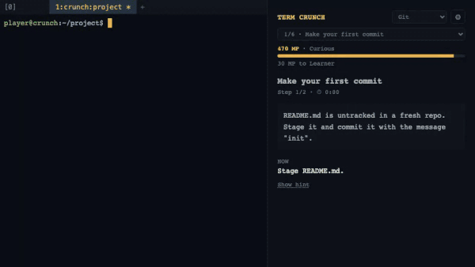
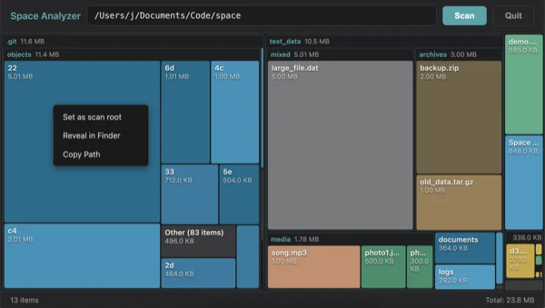
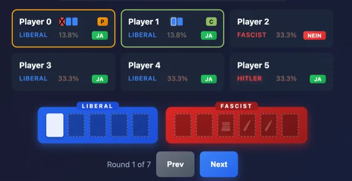
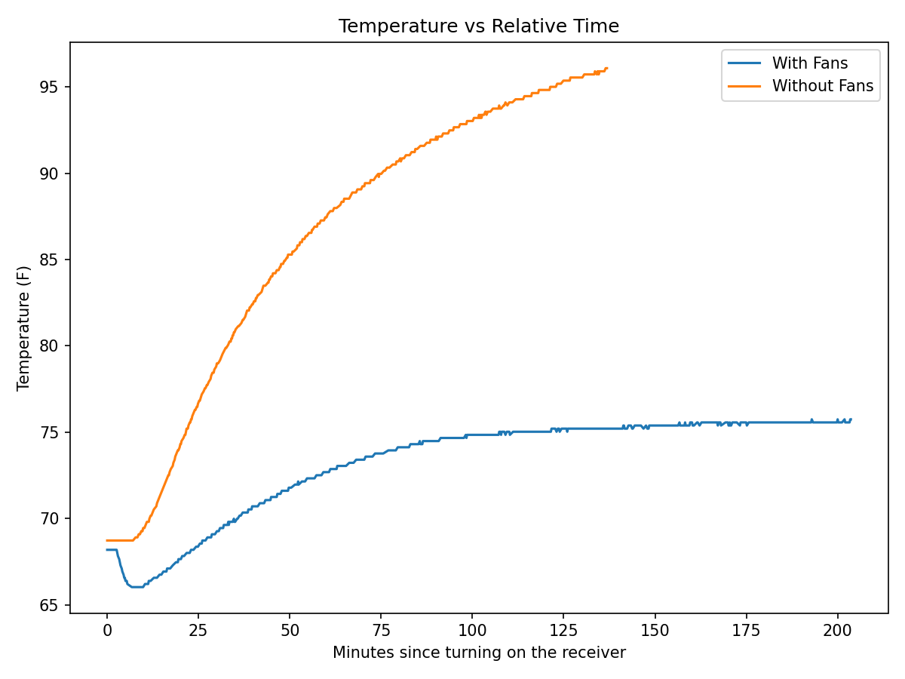
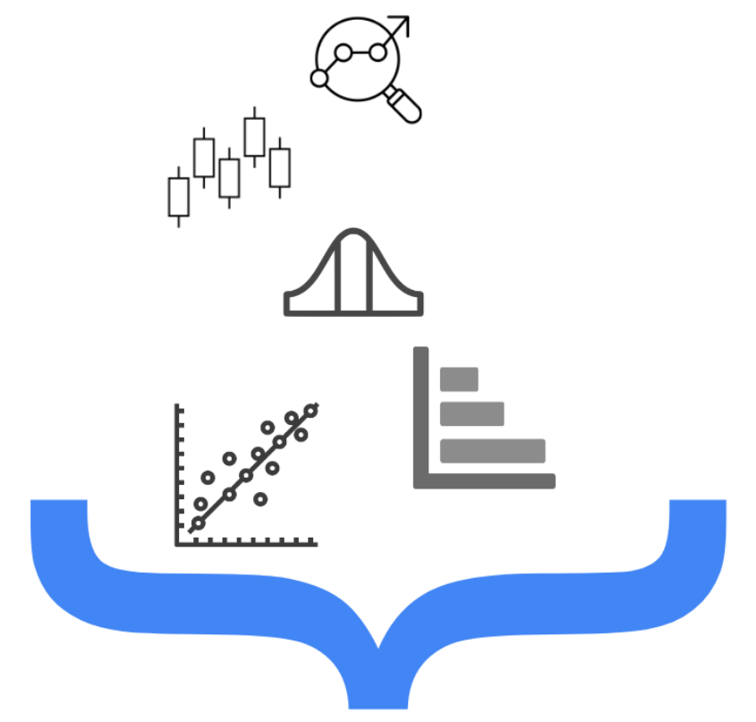
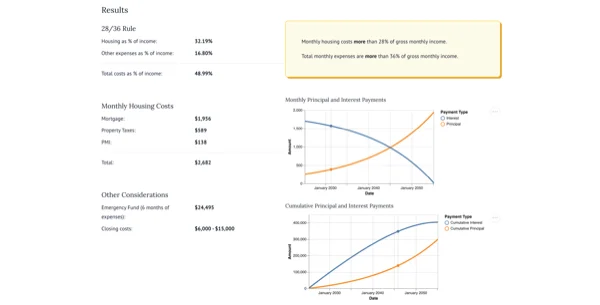
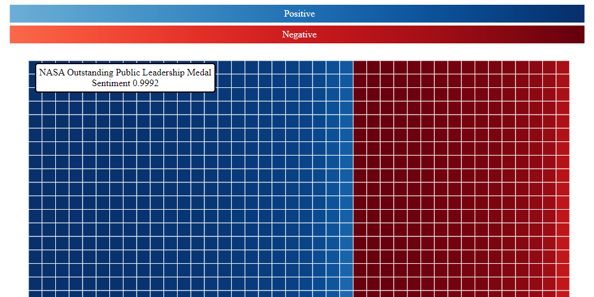
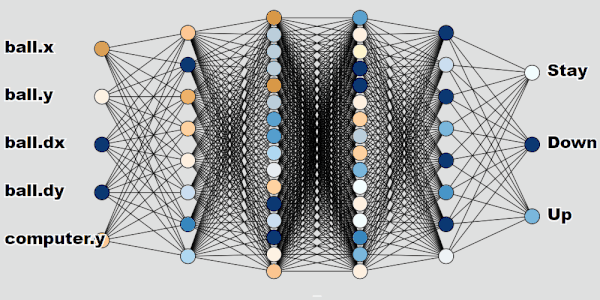

Termverse
A collection of browser games to help teach terminal concepts.

A collection of browser games to help teach terminal concepts.

A simple disk space visualization tool for macOS.

Built a simulation of Secret Hitler to view Bayesian probabilities on the fly.

Automating receiver cooling with a 12V trigger, relay, and a data-backed temperature check.
AI-assisted training, and race day recap of the Madison Marathon.
I analyzed past RAGBRAI routes and developed an algorithm to predict where the race will take place in 2025.

A collection of Jupyter notebooks covering common data science techniques, built with Jupyter Book.

An interactive mortgage calculator to help inform a new home purchase.

This project aims to explore sentiment models by visualizing their predictions on a subset of Wikipedia articles.

Play against a neural network RL agent in your browser! Incredible how much computation we have today.